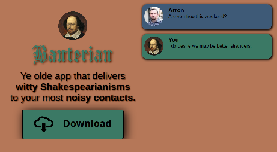
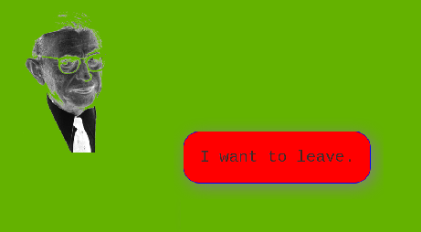

Banterian
Aside from plays and poetry, which aren't very useful, Shakespeare is famous for his insults, which can indeed be useful for alienating people. And so, if Shakespeare lived in our modern age, it is conceivable that he might have built an app designed to disparage further notifications from noisy contacts.
Transcendence
In Sartre's novel, Nausea, the protagonist, Antoine Roquentin, finds himself nauseated by inanimate objects that assualt his freedom. Likewise, bad CSS can arouse disgust and make reading and navigation of a site almost impossible. There might not be a cure of existential angst, but there could be for bad CSS.